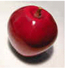
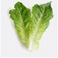

A paragraph with an image. A paragraph with imagine. A paragraph with imagine. A paragraph with imagine. A paragraph with imagine. A paragraph with imagine.
Eat fruits every day to get your natural sugars. One particular fruit which is really great is the apple. They say that "an apple a day keeps the doctor away" and they 're not kidding!
Don't forget your vegestables either. Eating vegestables every day is very good for your body. Leafy green vegestables like lettuce are particularly good for you. Generally, you should have a balanced diet of vegestables, fruits, and so on.